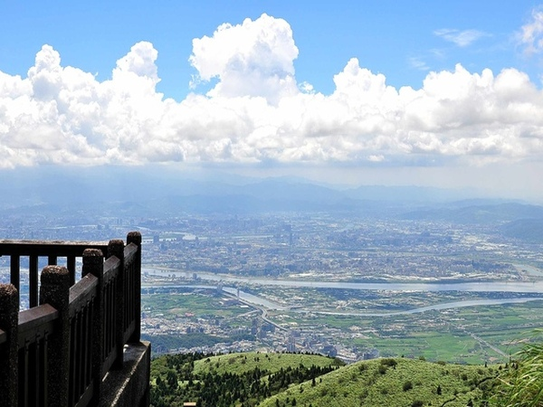
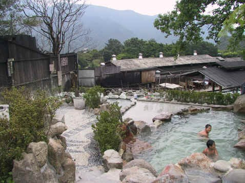

七星山主峰高1120公尺，是台北市的最高峰。 在台北市區朝北邊往上望，經常也可以望見它獨立偉岸的山影，尤其是山頂上因侵蝕而形成的七個大小不一的山頭，猶如北斗「七星」般聳立在台北上頭，山也因此得名。
由於受冬季東北季風影響，山南山北呈現全然不同的自然景觀。山北受強風吹拂，植物生長不易，白背芒與包籜矢竹成為優勢植物，每年秋季芒花開花時，甚是壯觀；山南則因有山頭遮去烈風，因此呈現典型的亞熱帶林相，林下豐富的多樣性生物，和山北截然不同。而七星山主、東峰步道貫穿山南北，走過步道，正好可以體驗兩種不同的生態景觀。七星山還是天然的地質教室，小油坑、大油坑、夢幻湖、冷水坑，都是認識火山地形的絕佳處所。
還有七星主峰上的展望，可以360度的全覽北市、北海岸等地，「登七星而小台北」，登臨的快意也使七星山備受山客喜愛。

台灣位於歐亞板塊與菲律賓海板塊碰撞地帶，地質構造特殊，溫泉資源非常豐富，但其中袛有大屯山火山群、綠島等少數溫泉屬於火山溫泉。
其中臺北市範圍內大屯山系的陽明山、北投、馬槽等。是開發已久的知名溫泉區，近年來隨著泡湯人口激增，溫泉觀光成為重要產業。
冬季寒流來臨時，各溫泉浴室人山人海，溫泉水供不應求，循環使用或滲入其他成分的新聞時有所聞，溫泉水資源的估算成為開發本區溫泉時的重要考慮項目。
以溫泉形成的三個要素條件：熱源、水源、及溫泉通路，大屯火山區的熱源及裂隙通路都不成問題，但因地形及地質關係，地下水在進入深層地層前多已回流地面成為回歸水或湧泉，淺層地下水成為溫泉水的補注關鍵
如果能在這邊待到晚上的話，還可以看到美美的夜景，享受著絕然不同的大屯山景色。
小油坑位於七星山西北麓，海拔高度約 805 公尺。

小油坑這個名子的由來，是因為此地盛產硫磺，而以前的人採硫後需要煮硫，硫磺溶解後就像油一樣黃黃，所以出產這種黃油的坑洞就叫油坑。
七星山東北側有一處國家公園內最大的硫氣孔叫大油坑，這裡的規模較小就叫小油坑。也因為這樣使許多觀光客來這邊看此景色。

日月滿休閒農場坐落在臺北市的後花園－陽明山上。

擁有得天獨厚的自然環境，有著農村的自然風味，又能遠離城市的喧囂，晴空下大冠鳩的翱翔；傍晚時竹雞的雞狗乖；在徐徐的微風之中川流不息的百年古圳，在這相信你能找到兒時的記趣。
桶柑與紅蘿蔔是日月滿冬天的超人氣商品，此外農場還結合市民農園提供遊客可以親自耕作，感受另類的休閒生活樂趣。
竹子湖位於陽明山國家公園核心區，海拔約650-670公尺。

其北側為小觀音山、東依著七星山、西靠臨大屯山、向南則敞開一覽無遺地俯瞰臺北盆地。
其原是35萬年前火山噴發造成的「堰塞湖」，因侵蝕作用產生缺口，湖水逐漸流失枯竭形成一處窪地。其自古即劃分為東湖、頂湖及下湖三個封閉的地區，東湖係指湖田國小一帶，為竹子湖地名原點之所在
頂湖係指越過湖田橋後，沿右邊產業道路前行，一處面積約20公頃的小盆地，因位於東湖之上方高處，故名頂湖；下湖則指今海芋大道一帶的盆地，竹子湖溪穿流其間，因位於東湖相對低處，故外下湖。
除此之外，這邊最有名的就是五顏六色的繡球花以及海芋吸引著觀光客前來拍照，增進當地的地方特色。

紗帽山溫泉發展歷史上相當悠久，在日據時期時就是主要的硫磺礦產區，也留有許多採礦的遺跡與記載。
溫泉水質上，因為受到火山活動影響，加上地質成分很多，因此在紗帽山溫泉區不但溫泉源頭多，溫泉水質的種類也多，不過相較於北投溫泉的硫礦泉比起來，少了濃厚又刺鼻的硫礦味。
地理位置上，因為紗帽山溫泉區非常鄰近天母商圈，堪稱是最接近都會的溫泉山區，來到這裡遊玩的遊客大多都是當天往返，加上當地的氣溫較低、土壤肥沃，種植出來的蔬菜比平地甜美多汁，因此有別於一般的旅館住宿為主的溫泉區，當地的溫泉業者將經營的重心放在溫泉、美食上，各種的音樂餐廳、景觀餐廳林立，到了夜幕時分各餐廳的霓虹更將山林小徑點綴的熱鬧繽紛。
冬天來到濃濃硫磺味的陽明山馬槽，有機會一定要一訪頗負盛名的馬槽花藝村。這裡因為鄰近溫泉源頭，因此擁有極佳的泉質，讓你不用擔心花錢泡到參了一堆熱水、魚目混珠的稀釋溫泉。
藝村這裡提供了多種的泡湯選擇。除了男、女湯的露天浴池外，也有室內的個人浴池，或是家庭式的半露天包廂，戶外的露天浴池不僅寬敞，同時也提供了泡湯、沖壓SPA、泥浴等不同的服務。

對於純粹想要享受泡湯品質或是順道想要一併用餐的人來說，是個很划算、很不錯的選擇。

陽明山國家公園是台灣離都會區最近的一座國家公園，泛指大屯山、七星山、紗帽山、小觀音山所構成的山區範圍相當廣大，包括台北市士林、北投部份山區以及新北市淡水、三芝、石門、金山、萬里等鄉鎮山區，海拔高度自200公尺至1120公尺範圍不等，總面積約11455公頃。

陽明山國家公園因受到緯度及海拔之影響，季風型氣候非常明顯，且本區地質構造特殊的錐狀或鐘狀火山體和火口湖等，形成火山活動的特殊景觀。

區內三小油坑、馬槽及擎天崗等分佈於園區內的多處溫泉區也早已遠近馳名，成為陽明山國家公園重要的景觀資源。

 333桃園市龜山區德明路5號
333桃園市龜山區德明路5號 TEL:(03)1234-5678
TEL:(03)1234-5678